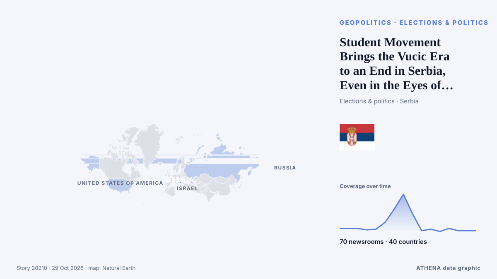

ATHENA News Room — Inteligencia informativa global — cada cifra explicada
Noticias del mundo, contrastadas entre países
ATHENA News Room sigue cientos de medios de todo el mundo y agrupa sus informaciones en acontecimientos. De cada uno ve cuántos medios de cuántos países lo publicaron, quién fue el primero y una puntuación de riesgo con sus motivos — actualizado cada 15 minutos, en siete idiomas.
En directo de las noticiasEvening News Brief October 30: Uttarakhand chopper crash, mega Binance crypto heist and more top stories87 medios · 38 países · Riesgo 3.9 · Fuentes: Phys.org, Yonhap (English)

GeopolíticaStudent Movement Brings the Vucic Era to an End in Serbia, Even in the Eyes of the OSCE and the oiip
Sunday’s vote could reshape the country’s political future. de EUobserver
Los titulares se muestran en inglés, tal como se publicaron.
US approves potential $2.1B sale of 500 Patriot missiles to Ukraine
The U.S. Department of State has approved the potential sale to Ukraine of 500 PAC-3 MSE missiles for Patriot air defense systems, valued at a total of $2.1 billion. de Ukrinform (English)
Israel's Arab parties emerge from deadlocked election as kingmakers
LONDON: It is a measure of how much is at stake in Tuesday’s legislative election in Israel, and how finely balanced the outcome might be, that a record 22,000 police officers have been deployed in… de Arab News
Hoy en cifras
| 08:00 | 732 |
|---|---|
| 09:00 | 691 |
| 10:00 | 676 |
| 11:00 | 620 |
| 12:00 | 689 |
| 13:00 | 530 |
| 14:00 | 818 |
| 15:00 | 507 |
| 16:00 | 571 |
| 17:00 | 342 |
| 18:00 | 431 |
| 19:00 | 1738 |
| 20:00 | 503 |
| 21:00 | 403 |
| 22:00 | 439 |
| 23:00 | 376 |
| 00:00 | 285 |
| 01:00 | 196 |
| 02:00 | 288 |
| 03:00 | 180 |
| 04:00 | 259 |
| 05:00 | 396 |
| 06:00 | 484 |
| 07:00 | 473 |
Riesgo de los eventos de hoy
Robert Abela Thanks Christine Lagarde For Her Leadership As ECB President
European Central Bank President Christine Lagarde will step down on Feb. de CNBC Economy
European Diplomats Refuse to Pose for Photo With Russia’s Lavrov at G20
European diplomats refused to pose with Russian Foreign Minister Sergey Lavrov on Friday, Oct. de Kyiv Post
What Maria Corina Machado’s return to Venezuela means for its democratic transition
CARACAS, Oct 23 - The Venezuelan opposition movement headed by Nobel Peace Prize laureate Maria Corina Machado is preparing for eventual elections, including a new effort to boost voter registration… de The Straits Times
Lo más cubierto
- Sociedad y derecho
High-speed train collision in Spain: 68 dead, more than 100 injured
56 países · 115 medios - Geopolítica
Israel's Arab parties emerge from deadlocked election as kingmakers
49 países · 117 medios
Señales emergentes
- Aumento repentino · Activa ahoraWorld Health Organization
- Nombre nuevo en las noticias · Activa ahoraConstitutional Tribunal
- Aumento repentino · Activa ahoraUSB
- Nombre nuevo en las noticias · Activa ahoraBadrinath
- Aumento repentino · Activa ahoraChicago
Alertas oficiales
- Red notification for tropical cyclone ARNAB-26. Population affected by Category 1 (120 km/h) wind speeds or higher is 3.049 million .Red · GDACS ·
- M 7.0 - Bonin Islands, Japan regionM7.0 · USGS ·
- M 7.0 - Bonin Islands, Japan regionM7.0 · USGS ·
- M 6.2 - 43 km ESE of Port-Olry, VanuatuM6.2 · USGS ·
- M 6.0 - 214 km NW of Port-Olry, VanuatuM6.0 · USGS ·
El News Room en Telegram
Únase gratis al grupo ATHENA News Room y reciba las noticias en cuanto se publican aquí:
- eventos de última hora con riesgo de 6 o más
- un resumen cada hora de los principales eventos
- actualizaciones de los seguimientos de riesgo
- el informe diario cada mañana a las 10:00 (hora de Atenas)
- una perspectiva semanal
- avisos oficiales, señales emergentes y riesgos al alza
Pulse el botón, se abre Telegram, pulse Unirse. Las publicaciones están en inglés; puede silenciar o salir cuando quiera. ¿Sin Telegram? Es gratis en telegram.org.
Seguimiento de riesgos
Más ›Riesgos globales — semana 44, 2026 (26 oct – 1 nov) ›
Geopolítica, política y seguridad
Más ›Brazil's Lula to attend UN COP31 climate summit in Turkey
Our experts unpack what Lula’s victory means for Brazil’s ties with Washington and how it could reshape a region trending right. de Atlantic Council
- Guerras y conflictos
3 Killed as Ukraine Renews Drone Strikes Against Oil Refineries
- Guerras y conflictos
Saudi-led coalition says it intercepted Houthi drone near Riyadh
- Elecciones y política
Flavio Bolsonaro says he left Brazil because he is the victim of 'persecution'
- Guerras y conflictos
US Costs of Iran War Rise to Over $47 Billion, According to Pentagon Estimate
Economía, finanzas y mercados
Más ›- Cripto y activos digitales
Crypto exchanges call for quick moves to bolster defences after Binance heist
- Cripto y activos digitales
As it happened: Binance’s record $6.3B crypto hack
- Cripto y activos digitales
North Korea linked to $6.3B Binance hack
- Acciones, bonos y mercados
S&P Global revises Meta’s outlook to ‘negative’ on AI spending
Comercio, industria e infraestructuras
Más ›Call of Duty publisher apologizes for using real footage of Itaewon crowd crush
SEOUL, Oct. 30 (Yonhap) -- The makers behind the Call of Duty video game apologi... de Yonhap (English)
- Transporte marítimo y puertos
Oman rescues 25 from burning ship, Iran halts tankers
- Construcción e infraestructuras
Russians attack energy facility in Kyiv, leaving parts of city without power and water
- Aviación, tren y carretera
Ryanair responds to Kumar Sangakkara’s allegation
- Transporte marítimo y puertos
More on tanker set ablaze in Hormuz Strait
Energía, recursos y medio ambiente
Más ›Brent crude oil price rises
Oil prices experienced a decline of over 1% after hitting six-month peaks, primarily due to geopolitical unrest in Saudi Arabia. de Times of India
- Petróleo y gas
Oil jumps 2%, settles at 6-month highs on fears of escalation in Iran
- Contaminación y biodiversidad
Infected hay bales to be buried in a safe location
- Clima extremo y desastres
Mayon Volcano in northern Philippines erupts, alert level raised to 3
- Clima extremo y desastres
Fire pollution killed 3,560 people in Indonesia in September
Tecnología, IA y ciberseguridad
Más ›Beijing denies spying on Nvidia CEO Jensen Huang
Nvidia CEO Jensen Huang warned that Europe risks falling further behind the US and China in artificial intelligence, despite its industrial base and technical talent. de DigiTimes Asia
- Medios y desinformación
Tasnim News Agency’s reporter freed after 450 days in Israeli detention
- Inteligencia artificial
OpenAI slashes funding target by $10 billion amid tech rout, reports
- Medios y desinformación
Kremlin pressure: Independent Russian newspaper Novaya Gazeta shuts
- Inteligencia artificial
Dartmouth provost resigns over AI use in published articles
Empresas, compañías e inversión
Más ›Kazakhstan and Kuwait Agree to Expand Trade, Investment and Food Security Cooperation
Kuwait City, Oct 30: Kazakhstan and Kuwait held the second round of political consultations between their Ministries of Foreign Affairs, reaffirming their commitment to further str... de Arab Times
- Quiebras y reestructuraciones
Trump administration plans to deport some Afghan immigrants to Afghanistan
- Inversiones
Turkic states target 2027 launch for joint satellite from Kazakhstan
- Estrategia empresarial
South Africa’s Absa opens first Gulf office in Dubai to tap $158bn UAE-Africa trade boom
- Quiebras y reestructuraciones
Poundland to appoint administrators with thousands of jobs at risk
Salud, ciencia e investigación
Más ›Health insurance plan costs on Healthcare.gov to rise by double digits in 2027
Obamacare enrollees could see their health insurance premiums rise by double digits for a second year in a row, according to a report published Friday. de The Hill
- Avances
Aussies set daunting chase on final day
- Brotes y salud pública
Congo Ebola outbreak kills more than 5,000
- Brotes y salud pública
Saudi Arabia suspends travel to Kenya, bans visas and entry over Ebola concerns
- Investigación médica
09:14 Russian, Ukrainian officials involved in Oleshky humanitarian mission arrive in Belarus Society
Sociedad, derecho y políticas públicas
Más ›Fears of violence as France braces for Halloween protests
France on Saturday braced for a third weekend of protests coinciding with Halloween, as shops boarded up and authorities scrambled to prevent a repeat of the street violence that swept the country… de The Local France
- Crimen y corrupción
Probe into Andrew and Epstein’s Balmoral visit in ‘very early stages’ – police
- Tribunales y justicia
Polish president turns back from Senegal trip as top court chief suspended
- Accidentes y emergencias
Hong Kong has released the full report on Tai Po fire tragedy. Here’s all you need to know
- Migración y población
Seoul fears being sidelined as US reaches out to North Korea
Deportes
Más ›Senegal gears up for historic 2026 Youth Olympic Games in Dakar
The International Olympic Committee is upbeat just 24 hours before competition gets under way at the 2026 Youth Olympic Games in Senegal. de France 24 English
Cultura, personas y estilo de vida
Más ›King Charles’ sorrow over slavery faces test as reparations movement gains ground
European traders enslaved 12.5 million Africans, including 3.2 million transported by Britain. de Express Tribune
- Necrológicas
Former Chinese Vice Premier Liu Yandong passes away at 81
- Realeza y personajes
King faces calls for apology, slavery reparations in Caribbean
- Música
Macklemore says he has ‘endless love’ for supporters of Free Palestine tour
- Cine y televisión
Patrick Stewart, Star Trek and X-Men actor, dies at 86